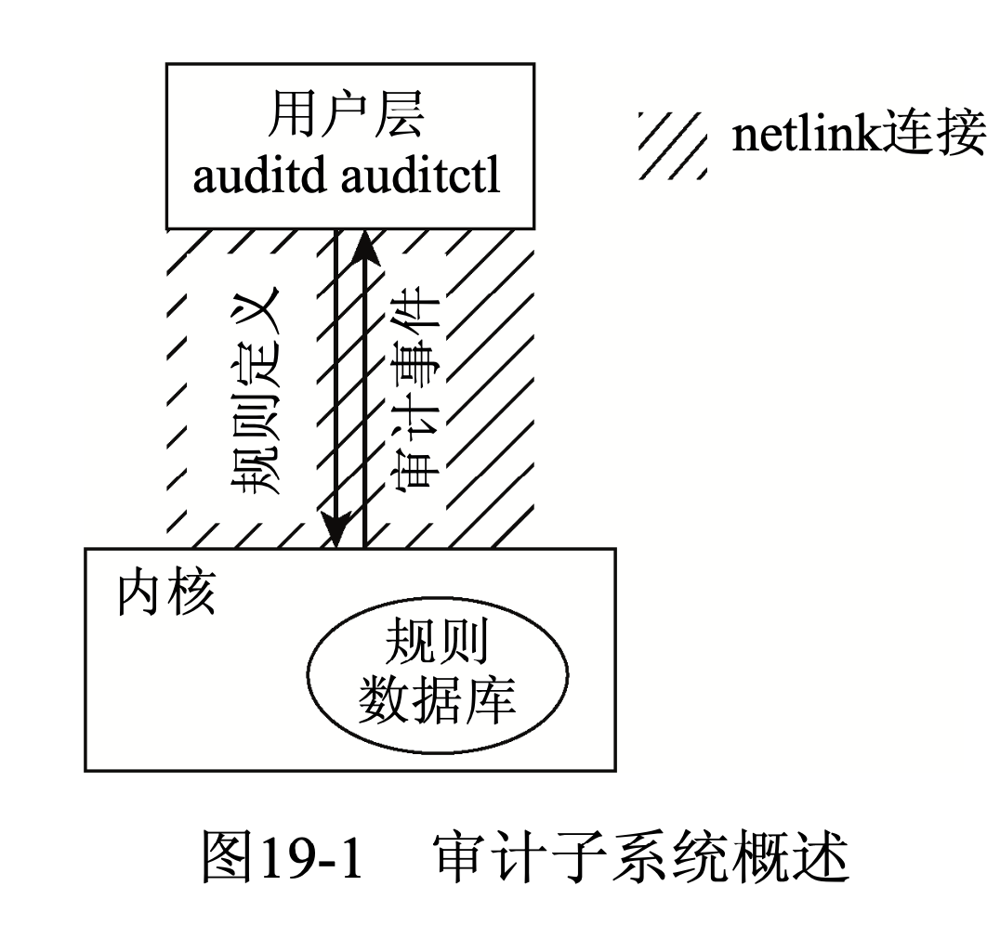
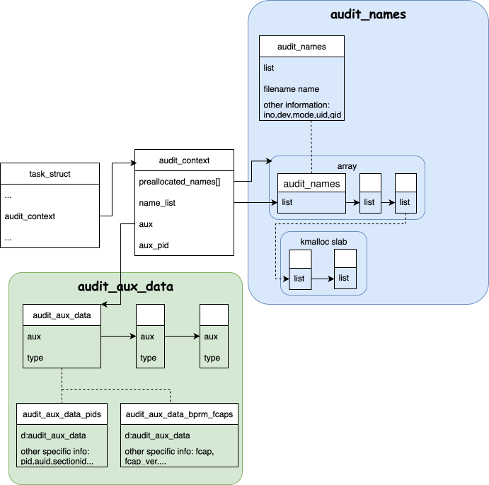

Audit Overflow
title: “audit” author: fuqiang date: 2025-12-02 20:47:00 +0800 categories: [audit] tags: [audit] math:true —
overflow
在了解内核audit子系统之前，我们先来看下 现实生活中 审计人员角色所承担的 职责:
审计（英语：auditing）是对资料作出证据搜集及分析，以评估企业财务状况，然后就资 料及一般公认准则之间的相关程度作出结论及报告。1
审计人员首先要做的事情就收集资料。
而在 操作系统中，系统管理员通常也要从整个系统的角度, 审计应用行为。以用来增加安 全性，对出现故障的东西进行事后调查等等2. 这些行为的报告应该由应用之外 的, 可以捕获应用行为的第三方 – kernel 来提供这些信息。
除了系统管理员作为审计角色，监视系统。程序员通常也会通过各种各样的调试工具来 monitor, record 系统的行为。但是其目的不同。
| 项目 | 管理员（高层视角） | 程序员（底层视角） |
|---|---|---|
| 视角 | 应用/用户行为 | 实现细节/流程 |
| 环境 | 生产，性能敏感 | 测试/生产，关注优化 |
| 目的 | 行为观测与评估 | 优化与故障定位 |
| 专业知识 | 安全相关运维/研发 | 内核相关运维/研发 |
| 配置方式 | 用户态工具配置 | 内核模块/系统工具配置 |
基于上面的需求, 审计机制应该有如下两个约束:
- 监控项(审计规则）必须能够动态改变（不能重启系统)。 并且最好通过更为安全的用户态工具。
- 使用审计时，尽量不影响系统性能。
在思考kernel audit 实现之前，我们来思考下，还有没有其他的观测子系统，类似于audit 子系统的需求 ?
– BPF
BPF 同样的要求:
- 高效
首先如何提高效率呢? 将规则匹配传递到内核侧，让内核侧过滤，然后将过滤后的信息，在 通过一定的方式传递到用户态。
同样的，audit子系统也是类似。在内核中维护一个规则数据库, 由用户态工具auditctl配置 更新数据库。然后内核通过该数据库的rules过滤event，将过滤后的event 传到用户态(auditd)。 用户态和内核态通信的方式为netlink 。

审计机制分为两种类型的审计事件:
- 系统调用审计: 允许在进入/退出系统调用时，进行一些日志记录。
- 除了系统调用的其他类型事件
系统调用审计触发比较频繁，对性能影响较大, 这里独立控制。
audit rules
通过auditctl 可以更改内核的规则数据库。
一条过滤规则可以包含下面三部分:
- filter(过滤器): 表示该rules 所属事件的种类, E.g.:
- 系统调用事件审计: filter=entry(具体的入口，例如,
open,rmdir… - 创建进程事件审计: filter=task
- 系统调用事件审计: filter=entry(具体的入口，例如,
- action(过滤后对该事件处理)
- always: 启用规则
- never: 禁用规则。（这个很有用, 过滤器会将所有的规则保存在一个列表中， 将使能第一个匹配到的规则，所以将一个never规则放在最前面，可以禁止 对该审计事件的处理)
- 额外约束(用该约束进一步过滤): 由(若干)三个字段构成:
{字段，比较器，值}- 字段: 内核可以观测的变量。例如UID, PID, dev id 或者syscall param等.
- 比较器: 常见的比较器运算符, E.g., (
<=, <, =)… - 值: 字段类型所对应的需要过滤的值
我们来看下面模版:
1
2
## 模版
root@meitner ~ auditctl -a filter,action -F field=value
举几个例子
- 对
64位架构下的sys_open系统调用进行审计1
auditctl -a always,exit -F arch=b64 -S open,openat,creat -k file_access
always,exit: 总是表示在系统调用返回时进行审计arch=b64: 额外约束，表示只对64位系统调用进行审计-k file_access: 自定义关键字，可以用来后续检索相关日志。 比如用ausearch -k file_access查找所有匹配日志。
- 对root用户创建新进程的所有事件进行审计:
1
root@meitner ~ auditctl -a task,always -F euid=0
- filter: task
- action: always
- 约束:
euid=0{字段, 过滤器, 值} = {euid, =, 0}, 过滤euid为0(root用户)
举一个例子, UID为1000用户 使用open系统调用失败的事件
1
2
3
4
5
6
7
## 清空所有规则
[root@wang rocky-9.0]# auditctl -D
No rules
## 加入规则
[root@wang rocky-9.0]# auditctl -a exit,always -F arch=b64 -S open,openat -F success=0 -F uid=1000
执行下面命令产生审计日志
1
2
3
4
5
6
7
8
9
# ls /boott
type=SYSCALL msg=audit(1764729250.553:964): arch=c000003e syscall=257 success=no exit=-2 a0=ffffff9c a1=5569869ef4d0
a2=0 a3=0 items=1 ppid=18007 pid=18077 auid=0 uid=1000 gid=1000 euid=1000 suid=1000 fsuid=1000 egid=1000 sgid=1000
fsgid=1000 tty=pts1 ses=11 comm="ls" exe="/usr/bin/ls" key=(null)ARCH=x86_64 SYSCALL=openat AUID="root" UID="wang"
GID="wang" EUID="wang" SUID="wang" FSUID="wang" EGID="wang" SGID="wang" FSGID="wang"
type=CWD msg=audit(1764729250.553:964): cwd="/export/wfq/vm/rocky-9.0"
type=PATH msg=audit(1764729250.553:964): item=0 name="/usr/share/locale/zh_CN.UTF-8/LC_MESSAGES/coreutils.mo"
nametype=UNKNOWN cap_fp=0 cap_fi=0 cap_fe=0 cap_fver=0 cap_frootid=0
实现
审计在kernel中的实现集中在kernel/audit*中:
- audit.c: 核心审计机制
- auditsc.c: 系统调用审计
- auditfilter.c: 过滤审计事件机制
- audit_fsnotify.c
- audit_watch.c
- audit_tree.c: 对整个目录树进行审计 这里，我们先仅关心, 前三个文件的实现:
数据结构

audit subsystem使用来记录进程触发的一些事件，所以在task_struct中引入了 audit_context 数据结构, 成员如下:
audit_context
| member | type | information |
|---|---|---|
| dummy | int | 如果没有规则时, dummy 为1, 此时在内核各个流程中 |
| 的hook将不会记录审计信息 | ||
| context | enum context | [1] |
| state, current_state | enum audit_state | [2] |
| stamp | audit_stamp | 在audit_get_stamp中调用，获取当前时间戳, 以 |
| 及当前记录的序列号 | ||
| major | int | syscall audit相关, 表示系统调用的调用号 |
| argv | unsigned long[4] | syscall audit相关, 系统调用参数 |
| return_code | int | syscall audit相关，系统调用的返回值, 但会根据系 |
统调用的实际返回值做一些fixup,详见audit_return_fixup | ||
| return_valid | int | syscall audit相关，系统调用的是否执行成功 |
| preallocated_names | audit_names[] | [3] |
| name_count | int | 当前name_list中成员的数量 |
| name_list | list_head | [3] |
| type | int | |
| pwd | path | 和syscall audit 相关，通过保存pwd, 可以得到审计文件 |
| 的绝对路径 | ||
| uring_op | int | uring 相关 |
| sockaddr | sockaddr_storage | socket 相关 |
| ppid | pid_t | 当前task_struct 相关 |
| {,e,s,fs}uid | kuid_t | 当前task_struct 相关 |
| {,e,s,fs}guid | kgid_t | 当前task_struct 相关 |
| target_pid | pid_t | ptrace相关[4] |
| target_{a,}uid | kuid_t | [5] |
| target_comm | char[] | [5] |
| arch | int | 似乎和signal相关[6] |
| socketcall,ipc,… | union | 为具体的syscall保存的特定的信息 |
- context: AUDIT_CTX_{UNUSED, SYSCALL, URING},记录当前context所处的上下文, 例如在系统调用时，会赋值 AUDIT_CTX_SYSCALL, 当系统调用即将返回时，将其置位
AUDIT_CTX_UNUSED state, current_state: 审计的活动级别AUDIT_STATE_DISABLED: 不开启审计, 不创建per-task audit_context不生成syscall-specific audit recordsAUDIT_STATE_BUILD: 开启审计，创建per-task audit_context, 并且在系统调用产生事件时构建审计记录AUDIT_STATE_RECORD: 开启审计，创建per-task audit_context, 并且在系统调用产生事件时，构建审计记录，并 将审计信息写出（传递给用户态)
audit_names用来存储在syscall 事件中, 对文件操作事件的文件本身的一些信息, 包括文件path, ino, mode 等等。而一次系统调用可能会操作多个文件（例如创建多个文件，删除多个文件), 所以需要 扩展该数据结构用来保存多个文件信息.
preallocate_names是一个静态数组。而name_list则是串联所有的audit_names成员. 当在本次事件(系统调用)中，将preallocate_names所有的成员 申请光后，下次分配需要使用kmalloc分配。理论上，分配的数量是无限个。在
audit_names章节中详细介绍.- 也和syscall 记录文件信息有关，type分为下面几种类型
- AUDIT_TYPE_UNKNOWN:
- AUDIT_TYPE_NORMAL :
- AUDIT_TYPE_PARENT :
- AUDIT_TYPE_CHILD_DELETE :
- AUDIT_TYPE_CHILD_CREATE :
TODO
- 和 ptrace 相关 TODO
- signal 相关, TODO
audit_names
某些系统调用属于path-based syscall, 也就是将一个具体的路径当做参数传入, 在审计 时, 我们不仅需要记录要访问文件 path, 还要包括具体的和inode相关的一些信息, 包括 ino, c_dev, 还需要保留其 path. (例如当我们打开一个不存在的文件时，我们需要 知道具体的不存在的文件路径)
| member | type | information |
|---|---|---|
| name | filename | 文件路径，可以和getname() 获取到的o |
| (copy_from_user)的字符串复用 | ||
| name_len | int | name字符串长度 |
| hidden | bool | |
| ino | unsinged long | 文件inode number |
| mode | umode_t | |
| uid | kuid_t | |
| gid | kgid | |
| rdev | dev_t | 文件所在的块设备的设备号 |
audit_aux_data
audit_context->aux 向 audit_context 实例附加辅助数据。
1
2
3
4
struct audit_aux_data {
struct audit_aux_data *next;
int type;
};
- type : 表示辅助数据类型
- next: 用来链接多个辅助数据
audit_aux_data 只是一个抽象的数据结构，还需要更高层的object 数据结构嵌套, 例如存储pid 信息的对象:
1
2
3
4
5
6
7
8
9
10
struct audit_aux_data_pids {
struct audit_aux_data d;
pid_t target_pid[AUDIT_AUX_PIDS];
kuid_t target_auid[AUDIT_AUX_PIDS];
kuid_t target_uid[AUDIT_AUX_PIDS];
unsigned int target_sessionid[AUDIT_AUX_PIDS];
struct lsm_prop target_ref[AUDIT_AUX_PIDS];
char target_comm[AUDIT_AUX_PIDS][TASK_COMM_LEN];
int pid_count;
};
audit_rules
在了解kernel实现之前，我们先回顾下规则的几个部分:
- filter: 过滤器
- action: 对该事件的处理
AUDLT_NEVER: 什么都不做AUDLT_ALWAYS: 记录审计信息AUDIT_POSSIBLE: 已经弃用
- 额外约束
基于上面三个部分，我们来看下用户态将rules传递到内核态所用到的数据结构:
audit_rule_data
1
2
3
4
5
6
7
8
9
10
11
12
13
14
15
/* audit_rule_data supports filter rules with both integer and string
* fields. It corresponds with AUDIT_ADD_RULE, AUDIT_DEL_RULE and
* AUDIT_LIST_RULES requests.
*/
struct audit_rule_data {
__u32 flags; /* AUDIT_PER_{TASK,CALL}, AUDIT_PREPEND */
__u32 action; /* AUDIT_NEVER, AUDIT_POSSIBLE, AUDIT_ALWAYS */
__u32 field_count;
__u32 mask[AUDIT_BITMASK_SIZE]; /* syscall(s) affected */
__u32 fields[AUDIT_MAX_FIELDS];
__u32 values[AUDIT_MAX_FIELDS];
__u32 fieldflags[AUDIT_MAX_FIELDS];
__u32 buflen; /* total length of string fields */
char buf[]; /* string fields buffer */
};
- flags: 表示过滤器其值有:
- AUDIT_FILTER_USER: 用户态的过滤器, 内核不会产生该事件
- AUDIT_FILTER_TASK: 进程创建
- AUDIT_FILTER_ENTRY: 系统调用entry
- AUDIT_FILTER_WATCH: 监视文件系统
- AUDIT_FILTER_EXIT: 系统调用退出
- AUDIT_FILTER_EXCLUDE:
- AUDIT_FILTER_TYPE:
__audit_inode_child规则 - AUDIT_FILTER_FS
- AUDIT_FILTER_URING_EXIT
- mask: 用来标记要过滤的syscall的id
- fileds: 字段
- values: 值
- filedflags: 比较符
用户态将audit_rule_data传入内核态后，内核态会将其转换为audit_entry.
audit_entry
内核将不同种类的flags的rules挂到不同的链表上。如下图所示:
1
2
3
4
5
6
7
8
9
10
11
12
audit_rules_list
list_head[] audit_entry audit_entry audit_entry
+-----------------+ +---------+ +--------+ +--------+
|FILTER_USER +------+list +----+ +----+ |
+-----------------+ +---------+ +--------+ +--------+
|FILTER_TASK | |rcu |
+-----------------+ +---------+
| | |rule |
+-----------------+ +----+----+ audit_krule
|FILTER_URING_EXIT| | +----------+
+-----------------+ +----------| |
+----------+
audit_entry中主要的实体部分为audit_krule
audit_krule
| member | type | information |
|---|---|---|
| pflags | u32 | 仅有 AUDIT_LOGINUID_LEGACY |
| flags | u32 | |
| listnr | u32 | list number, audit_rules_list 数组的位置 |
| action | u32 | 同audit_rule_data |
| mask[AUDIT_BITMASK_SIZE] | u32[] | 同audit_rule_data, 不过 audit_rule_data.mask |
| 中可以在数组末尾16位标记一些bit，用来标识syscall | ||
| class, 置位该bit则表示audit 这一组syscall, | ||
| audit_krule将class对应的syscall 置位mask 前面的bit中[1] | ||
| buflen | u32 | |
| field_count | u32 | 同audit_rule_data. |
| filterkey | char * | 母鸡 |
| fileds | audit_field | 同audit_rule_data |
| arch_f | audit_filed | arch rule 方便查看[2] |
| inode_f | audit_field | inode rule |
| watch | audit_watch | |
| audit_tree | tree | |
| exe | audit_fsnotify_mask | |
| rlist | list_head | |
| list | list_head | |
| prio | u64 |
- 我们来看下用户态(
audit_rule_data和audit_krulemask 不同)1 2 3 4 5 6 7 8 9 10 11 12 13 14 15 16 17 18 19 20 21 22 23
audit_rule_data(每个方框一个byte) 最后两个位class bitmask +---------+---------+---------+---------+--------+ | | |... | | | +---/--\--+---------+---------+---------+-/--\---+ / \ / \ / \ / \ 0000 0001 0100 0000 注意: class bit是从最后一个bit向前遍历的. 这里最后一个byte 的0100 0000 表示index 1 的 class，我们这里假设 index 1 的 class 有 syscall(5) syscall(7) 则audit_krule mask 如下: +---------+---------+---------+---------+--------+ | | | | | | +--/--\---+---------+---------+---------+--/--\--+ / \ / \ / \ / \ 1010 0001 0000 0000 audit_entry中fields和arch_field以及inode fields关系1 2 3 4 5 6 7 8 9 10 11
audit_entry --------------------+ / | audit_fields[] +------------+ / ++-----------+ -+- |... | / | | | +------------+ / +------------+ | |fields +----/ --------------------+ | | +------------+ / +------------+ | field_count |arch_f +------/ | | | +------------+ +------------+ | |inode_f +---NULL | | | +------------+ +------------+ -+-
参考commit
- initial commit
- v2.6.6-rc1
- add audit_inode_child
- add parent name:
- log more info for directory entry change events
- 9c937dcc71021f2dbf78f904f03d962dd9bcc130
- Amy Griffis amy.griffis@hp.com
- Thu Jun 8 23:19:31 2006 -0400
- modify audit_inode_child names to names_list
- audit: dynamically allocate audit_names when not enough space is in the names array
- commit 5195d8e217a78697152d64fc09a16e063a022465
- Author: Eric Paris eparis@redhat.com
- Date: Tue Jan 3 14:23:05 2012 -0500
- audit: overhaul audit_names handling to allow for retrying on path-based syscalls
- audit: add a new “type” field to audit_names struct
- commit: 78e2e802a8519031e5858595070b39713e26340d
- Author: Jeff Layton jlayton@kernel.org
- Date: Wed Oct 10 15:25:22 2012 -0400
- audit: overhaul
__audit_inode_childto accomodate retrying- commit 4fa6b5ecbf092c6ee752ece8a55d71f663d23254
- Author: Jeff Layton jlayton@kernel.org
- Date: Wed Oct 10 15:25:25 2012 -0400
- audit: add a new “type” field to audit_names struct
vfs: add the ability to retry lookup and operation to most path-based syscalls
- audit: merge loops in
__audit_inode_child()
相关链接
- wiki 审计学
<<深入Linux内核架构>>